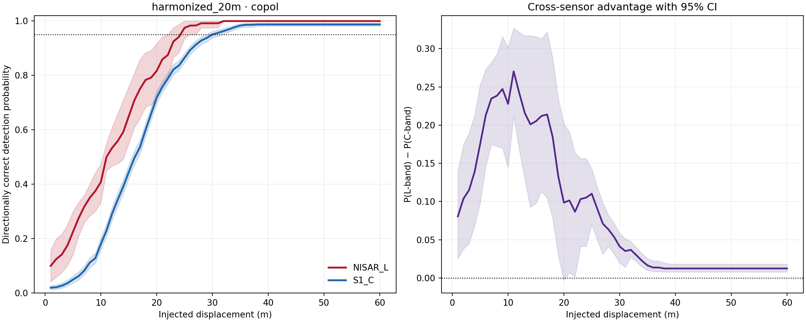
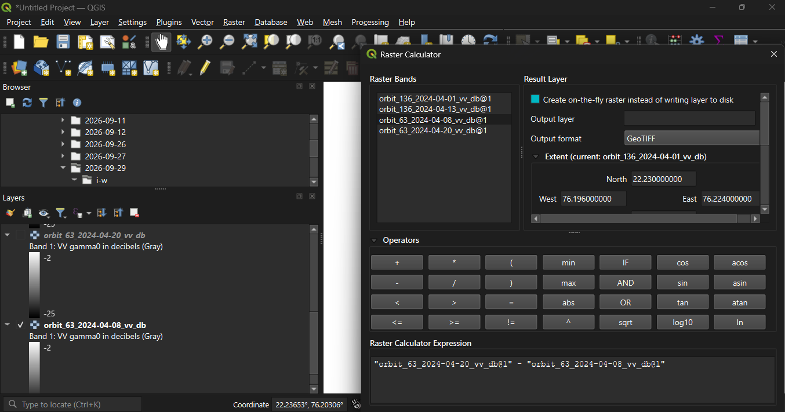
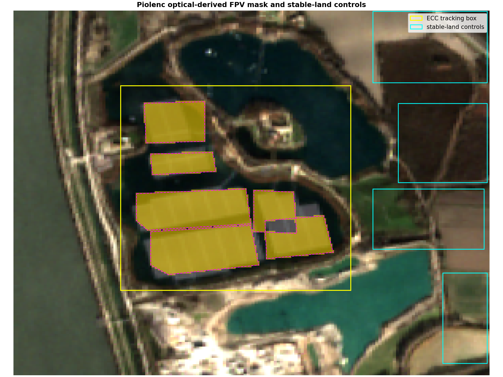
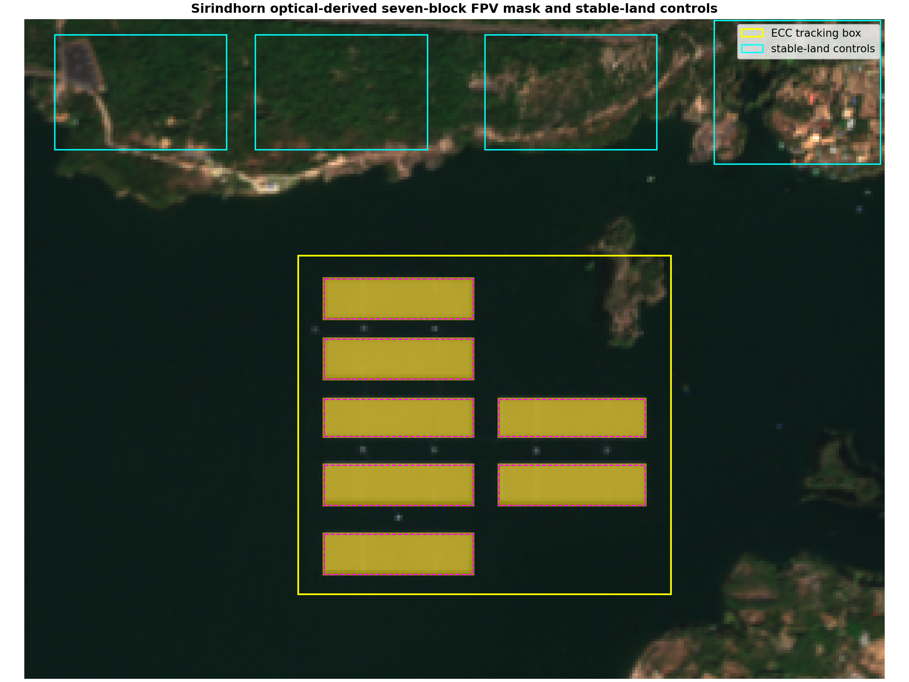
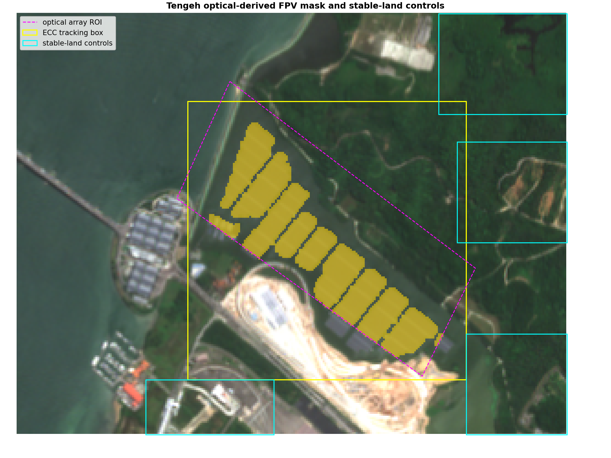
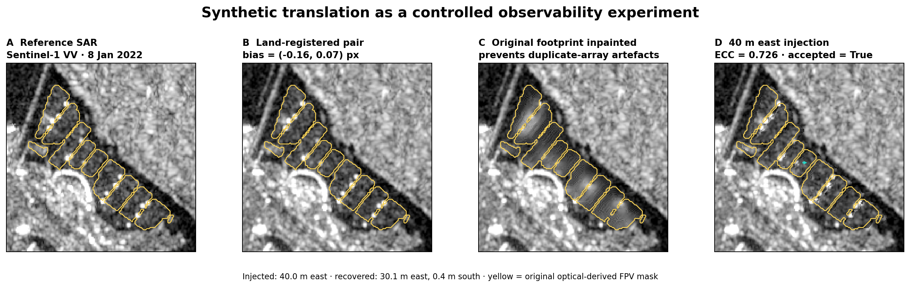

NISAR · L-SAR
24 cmCalibrated Level-2 GCOV diagonal covariance terms, terrain corrected and geocoded at 10 m or 20 m depending on acquisition mode.
Official mission factsIndependent remote-sensing study · research portfolio · v0.3
A controlled comparison of early NISAR L-band and historical Sentinel-1 C-band amplitude imagery—built from real rasters, locked temporal splits and 807,840 synthetic recovery trials.

FPV arrays are repetitive, speckled radar targets. A plausible vector from one image pair may reflect registration, water background or correlation ambiguity rather than physical motion.
This project estimates MD50, MD80 and MD95: the injected persistent displacement required for 50%, 80% and 95% directionally correct recovery. NISAR and Sentinel-1 are placed on the same physical grid and evaluated by the same frozen algorithm.
Finding: early pooled NISAR bounds are lower at 20 m, but Tengeh removes any defensible claim of universal L-band superiority.
Falsifiable premise
NISAR · L-SAR
24 cmCalibrated Level-2 GCOV diagonal covariance terms, terrain corrected and geocoded at 10 m or 20 m depending on acquisition mode.
Official mission factsSentinel-1 · C-SAR
C-bandHistorical radiometrically terrain-corrected backscatter, providing far greater temporal depth for the same installations.
Official mission overviewHow the question changed
QGIS was used to validate target visibility, raster alignment, sign conventions and spatial localization before automation. Quantitative MD curves came from the frozen Python engine.

FORMATIVE NULL
Storm-spanning Sentinel-1 estimates remained within the archived pilot’s non-event variability. Finite motion vectors were not labelled physical detections.
POSITIVE STRUCTURAL CHANGE
Damage-sector change exceeded quiet-pair limits in 6/6 orbit/polarization channels; whole-array translation exceeded them in 0/6.
PRODUCT BOUNDARY
The RGB screen returned no above-threshold motion, but rendered visualization pixels cannot validate native calibrated GCOV sensitivity.
Geographic replication



Controlled ground truth
Instead of drawing a vector after inspecting change, the experiment asks the detector to recover a known vector embedded in real, independently held-out raster pairs.

Linear gamma-zero → dB; warp each mission to an explicit physical grid.
Bidirectional phase correlation estimates nuisance motion from four stable controls.
Remove the original optical-derived array footprint to prevent duplicate-object artefacts.
Translate real array pixels through 1–60 m × eight directions.
Masked high-pass ECC returns a vector and correlation coefficient.
Require quality, calibration-only magnitude and ≤45° directional accuracy.
FROZEN RECOVERY RULE
Dual-pol adds: both channels alarm and their recovered directions agree within 45°.
Primary harmonized 20 m analysis
MD values are first tested magnitudes reaching the specified directionally correct recovery probability after isotonic fitting. Confidence intervals resample complete acquisition pairs.
| Sensor | MD50 | MD80 | MD95 |
|---|---|---|---|
| NISAR L | 11 m 11–15 | 20 m 16–23 | 25 m 22–26 |
| Sentinel-1 C | 17 m 16–17 | 23 m 22–23 | 30 m 29–32 |
Cells show point estimate and acquisition-pair clustered 95% interval.
Co-pol pooled MD95 separation in favour of early NISAR.
Dual-pol pooled MD95 separation in favour of early NISAR.
Sentinel-1 has 270 primary test pairs versus 15 for NISAR.
Interactive spatial comparison
Paired circles encode site-specific MD95 point estimates on a common scale. Click a site or switch detectors; open the evidence atlas for georeferenced rasters and regions of interest.
6 NISAR and 129 Sentinel-1 held-out test pairs at 20 m.
Claim discipline
SUPPORTED
SUPPORTED
NOT ESTABLISHED
NOT ESTABLISHED
All three NISAR site strata are marked UNDERPOWERED against the prespecified target of at least ten calibration and ten test pairs. Sentinel-1 strata meet that target. The limitation is stored in the data, not added as a footnote after seeing the curves.
Inspect, rerun, challenge
Provider-restricted raw imagery is not mirrored. The notebook retrieves it; selected small GeoTIFFs and all compact result tables are tracked for inspection.